Interface to the PPC (posterior predictive checking) module
in the bayesplot package, providing various plots comparing the
observed outcome variable \(y\) to simulated datasets \(y^{rep}\)
from the posterior predictive distribution. The pp_check method for
stanreg-objects prepares the arguments required for the specified
bayesplot PPC plotting function and then calls that function. It is
also straightforward to use the functions from the bayesplot package
directly rather than via the pp_check method. Examples of both are
given below.
# S3 method for stanreg pp_check(object, plotfun = "dens_overlay", nreps = NULL, seed = NULL, ...)
| object | A fitted model object returned by one of the
rstanarm modeling functions. See |
|---|---|
| plotfun | A character string naming the bayesplot
PPC function to use. The default is to call
|
| nreps | The number of \(y^{rep}\) datasets to generate from the
posterior predictive distribution and show in
the plots. The default depends on |
| seed | An optional |
| ... | Additonal arguments passed to the bayesplot function
called. For many plotting functions |
pp_check returns a ggplot object that can be further
customized using the ggplot2 package.
For binomial data, plots of \(y\) and \(y^{rep}\) show the
proportion of 'successes' rather than the raw count. Also for binomial
models see ppc_error_binned for binned residual
plots.
Gelman, A., Carlin, J. B., Stern, H. S., Dunson, D. B., Vehtari, A., and Rubin, D. B. (2013). Bayesian Data Analysis. Chapman & Hall/CRC Press, London, third edition. (Ch. 6)
Gabry, J., Simpson, D., Vehtari, A., Betancourt, M., and Gelman, A. (2018). Visualization in Bayesian workflow. Journal of the Royal Statistical Society Series A, accepted for publication. arXiv preprint: http://arxiv.org/abs/1709.01449.
The vignettes in the bayesplot package for many examples. Examples of posterior predictive checks can also be found in the rstanarm vignettes and demos.
PPC-overview (bayesplot) for links to
the documentation for all the available plotting functions.
posterior_predict for drawing from the posterior
predictive distribution.
color_scheme_set to change the color scheme
of the plots.
fit <- stan_glmer(mpg ~ wt + am + (1|cyl), data = mtcars, iter = 400, chains = 2) # just to keep example quick#> #> SAMPLING FOR MODEL 'continuous' NOW (CHAIN 1). #> #> Gradient evaluation took 3.8e-05 seconds #> 1000 transitions using 10 leapfrog steps per transition would take 0.38 seconds. #> Adjust your expectations accordingly! #> #> #> Iteration: 1 / 400 [ 0%] (Warmup) #> Iteration: 40 / 400 [ 10%] (Warmup) #> Iteration: 80 / 400 [ 20%] (Warmup) #> Iteration: 120 / 400 [ 30%] (Warmup) #> Iteration: 160 / 400 [ 40%] (Warmup) #> Iteration: 200 / 400 [ 50%] (Warmup) #> Iteration: 201 / 400 [ 50%] (Sampling) #> Iteration: 240 / 400 [ 60%] (Sampling) #> Iteration: 280 / 400 [ 70%] (Sampling) #> Iteration: 320 / 400 [ 80%] (Sampling) #> Iteration: 360 / 400 [ 90%] (Sampling) #> Iteration: 400 / 400 [100%] (Sampling) #> #> Elapsed Time: 0.131234 seconds (Warm-up) #> 0.064195 seconds (Sampling) #> 0.195429 seconds (Total) #> #> #> SAMPLING FOR MODEL 'continuous' NOW (CHAIN 2). #> #> Gradient evaluation took 3.4e-05 seconds #> 1000 transitions using 10 leapfrog steps per transition would take 0.34 seconds. #> Adjust your expectations accordingly! #> #> #> Iteration: 1 / 400 [ 0%] (Warmup) #> Iteration: 40 / 400 [ 10%] (Warmup) #> Iteration: 80 / 400 [ 20%] (Warmup) #> Iteration: 120 / 400 [ 30%] (Warmup) #> Iteration: 160 / 400 [ 40%] (Warmup) #> Iteration: 200 / 400 [ 50%] (Warmup) #> Iteration: 201 / 400 [ 50%] (Sampling) #> Iteration: 240 / 400 [ 60%] (Sampling) #> Iteration: 280 / 400 [ 70%] (Sampling) #> Iteration: 320 / 400 [ 80%] (Sampling) #> Iteration: 360 / 400 [ 90%] (Sampling) #> Iteration: 400 / 400 [100%] (Sampling) #> #> Elapsed Time: 0.194968 seconds (Warm-up) #> 0.151668 seconds (Sampling) #> 0.346636 seconds (Total) #>#> Warning: There were 1 divergent transitions after warmup. Increasing adapt_delta above 0.95 may help. See #> http://mc-stan.org/misc/warnings.html#divergent-transitions-after-warmup#> Warning: Examine the pairs() plot to diagnose sampling problems# Compare distribution of y to distributions of multiple yrep datasets pp_check(fit)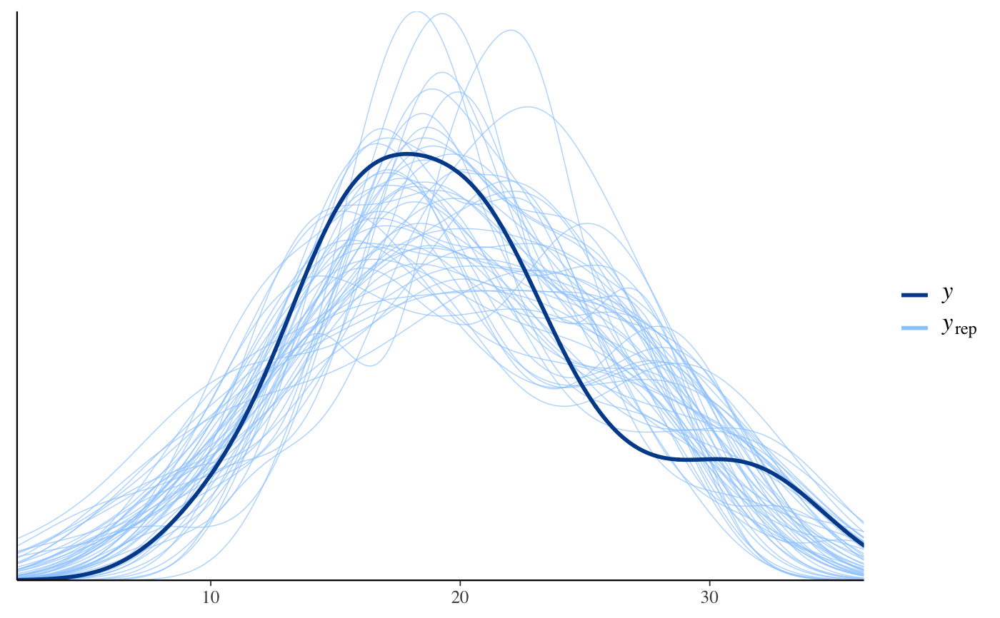pp_check(fit, plotfun = "boxplot", nreps = 10, notch = FALSE)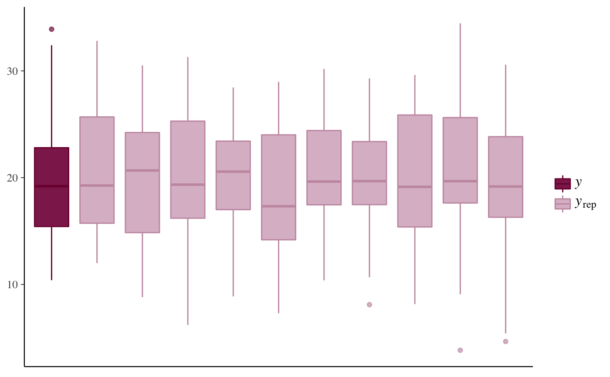pp_check(fit, plotfun = "hist", nreps = 3)#>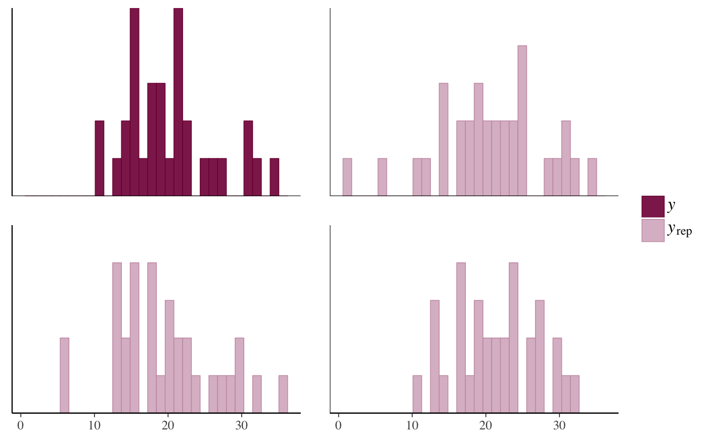# Same plot (up to RNG noise) using bayesplot package directly bayesplot::ppc_hist(y = mtcars$mpg, yrep = posterior_predict(fit, draws = 3))#>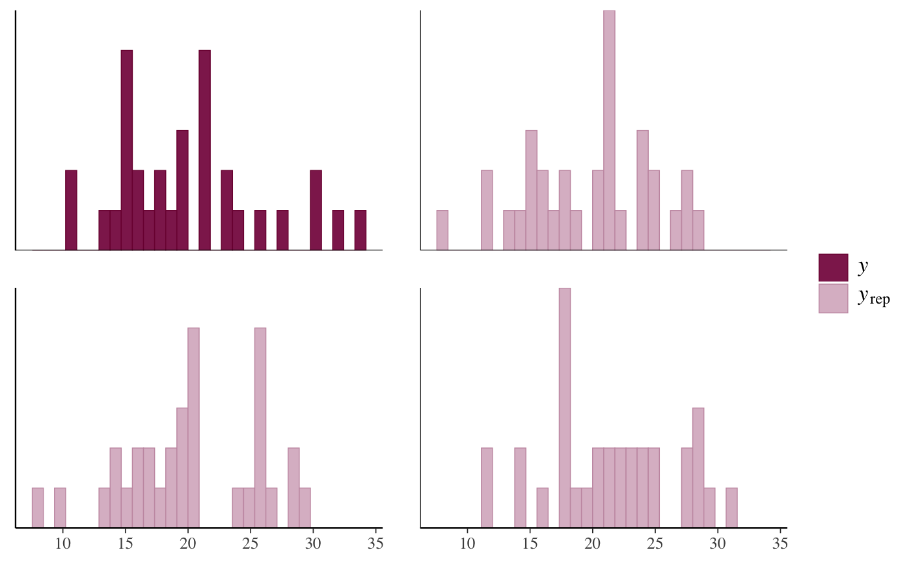# Check histograms of test statistics by level of grouping variable 'cyl' pp_check(fit, plotfun = "stat_grouped", stat = "median", group = "cyl")#>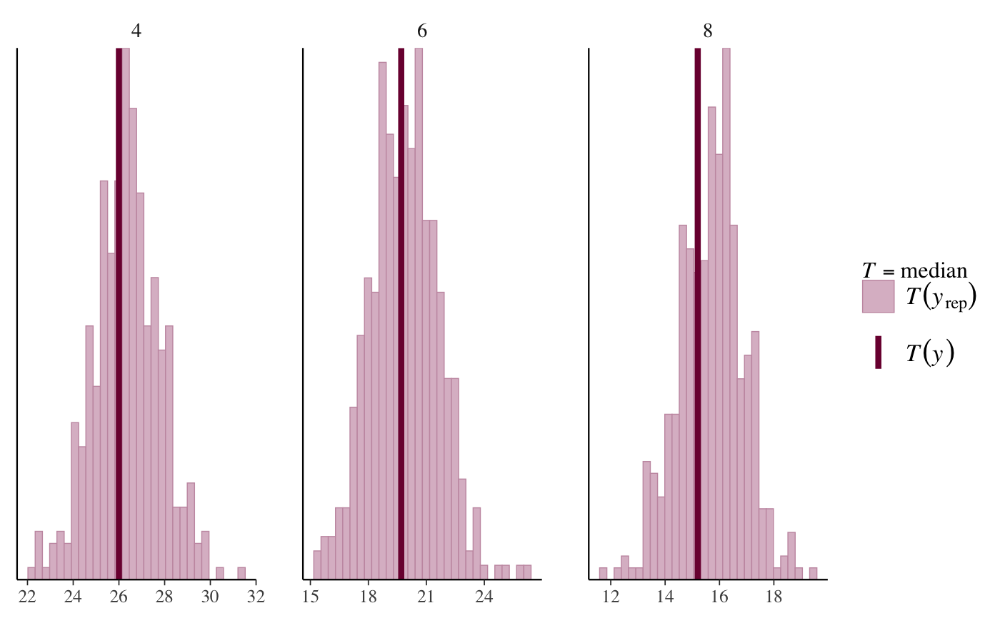# Defining a custom test statistic q25 <- function(y) quantile(y, probs = 0.25) pp_check(fit, plotfun = "stat_grouped", stat = "q25", group = "cyl")#> Error in get(as.character(FUN), mode = "function", envir = envir): object 'q25' of mode 'function' was not found# Scatterplot of two test statistics pp_check(fit, plotfun = "stat_2d", stat = c("mean", "sd"))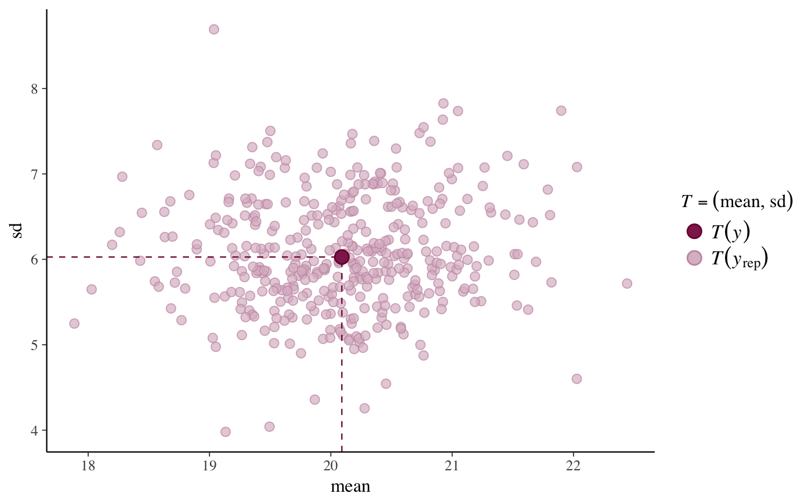# Scatterplot of y vs. average yrep pp_check(fit, plotfun = "scatter_avg") # y vs. average yrep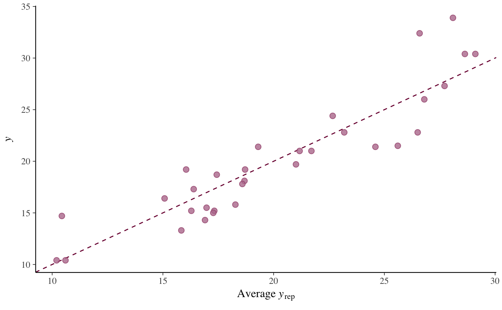# Same plot (up to RNG noise) using bayesplot package directly bayesplot::ppc_scatter_avg(y = mtcars$mpg, yrep = posterior_predict(fit))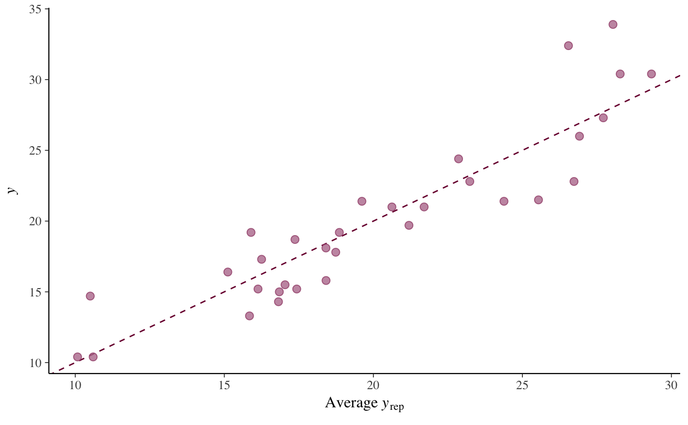# Scatterplots of y vs. several individual yrep datasets pp_check(fit, plotfun = "scatter", nreps = 3)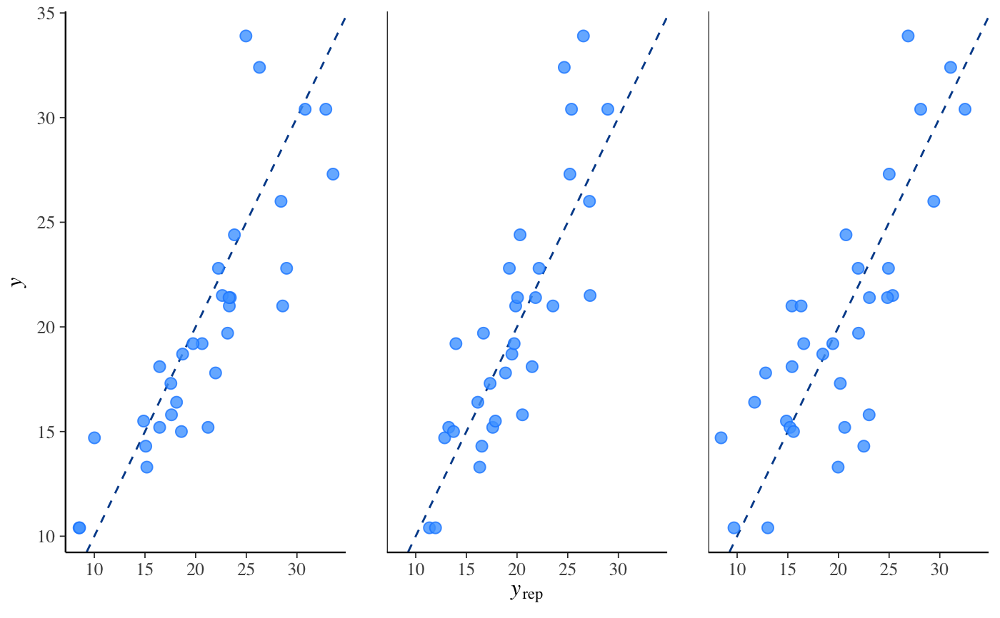# Same plot (up to RNG noise) using bayesplot package directly bayesplot::ppc_scatter(y = mtcars$mpg, yrep = posterior_predict(fit, draws = 3))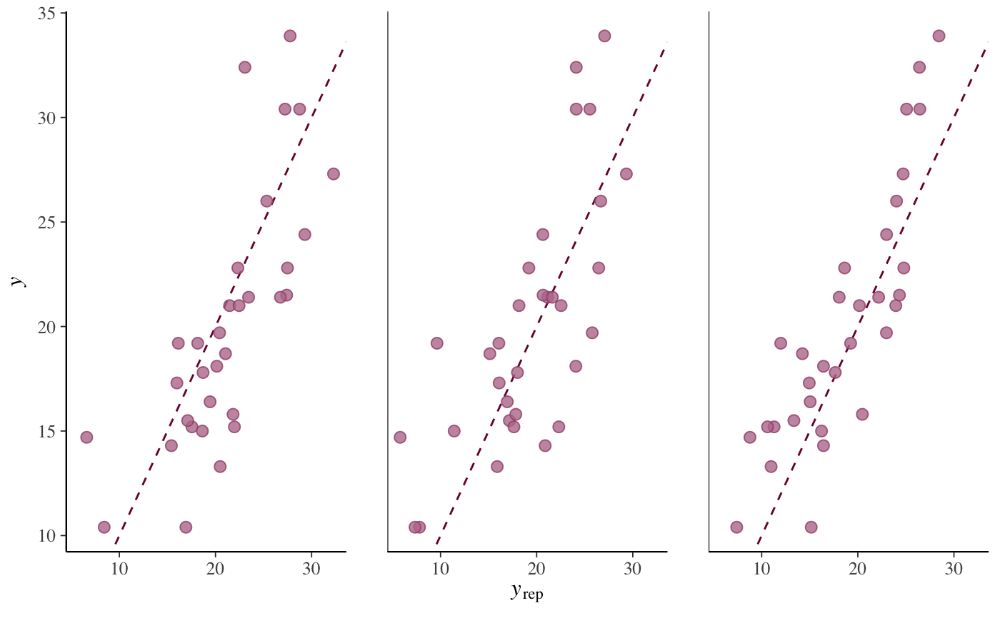# yrep intervals with y points overlaid # by default 1:length(y) used on x-axis but can also specify an x variable pp_check(fit, plotfun = "intervals")#>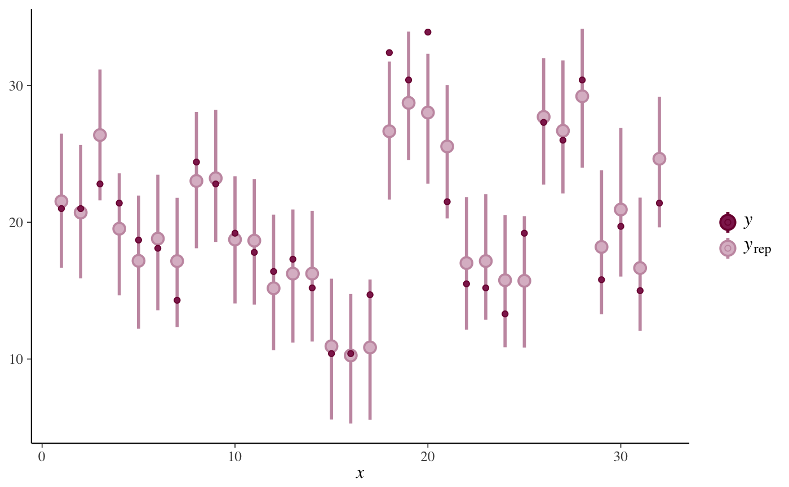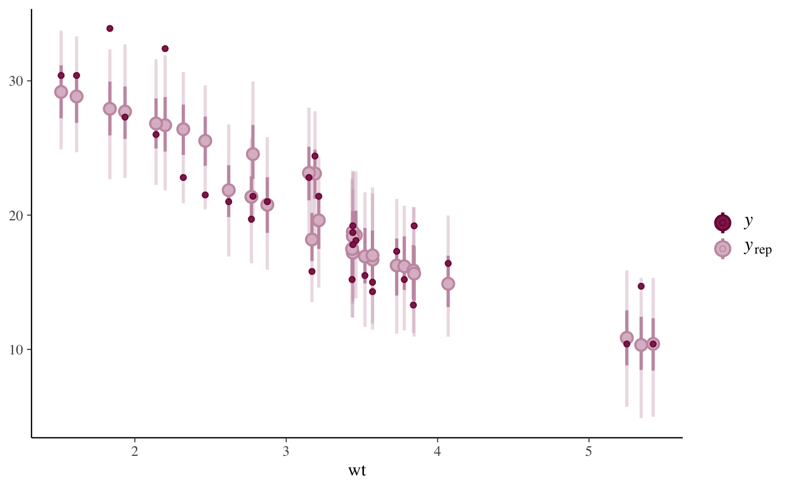# Same plot (up to RNG noise) using bayesplot package directly bayesplot::ppc_intervals(y = mtcars$mpg, yrep = posterior_predict(fit), x = mtcars$wt) + ggplot2::xlab("wt")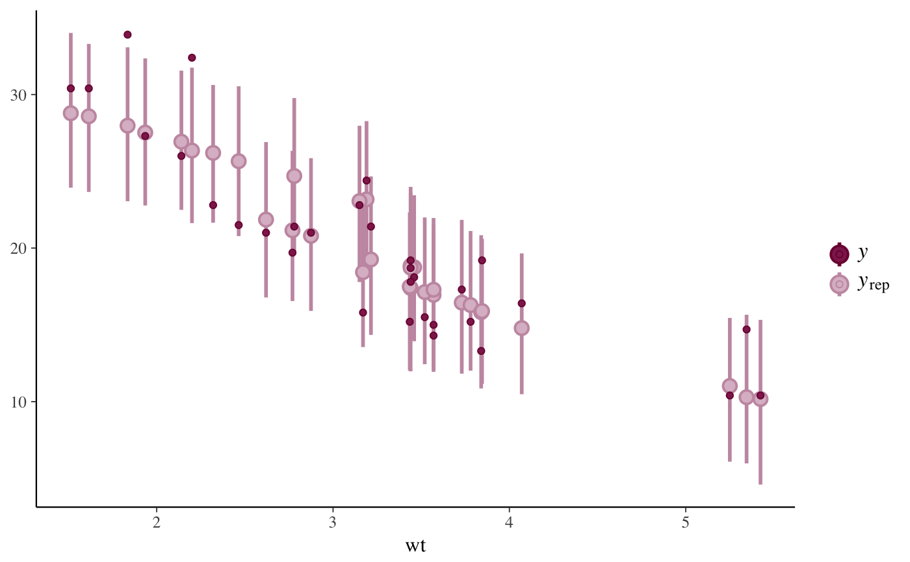# predictive errors pp_check(fit, plotfun = "error_hist", nreps = 6)#>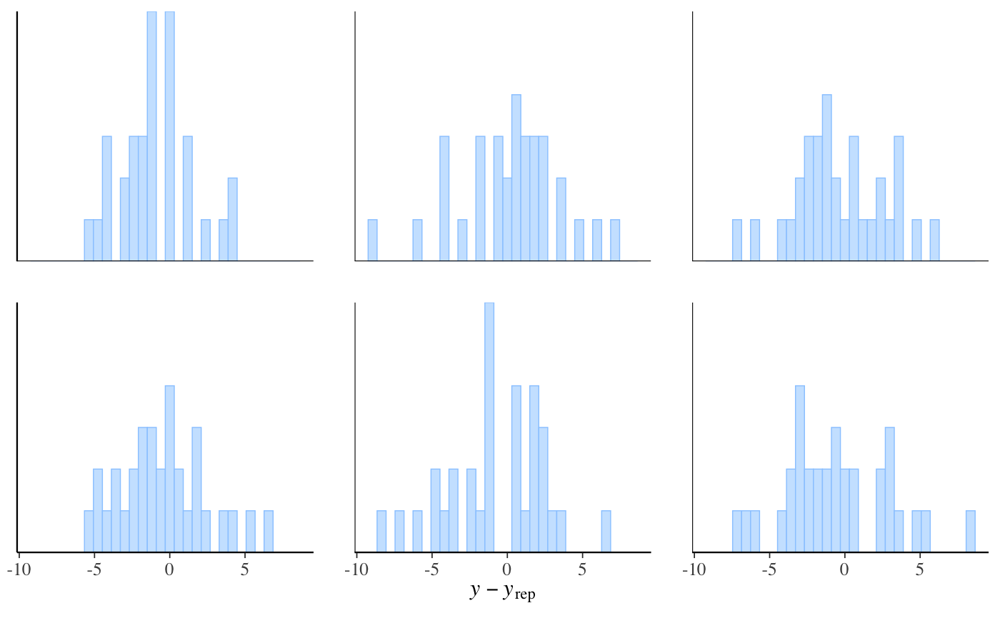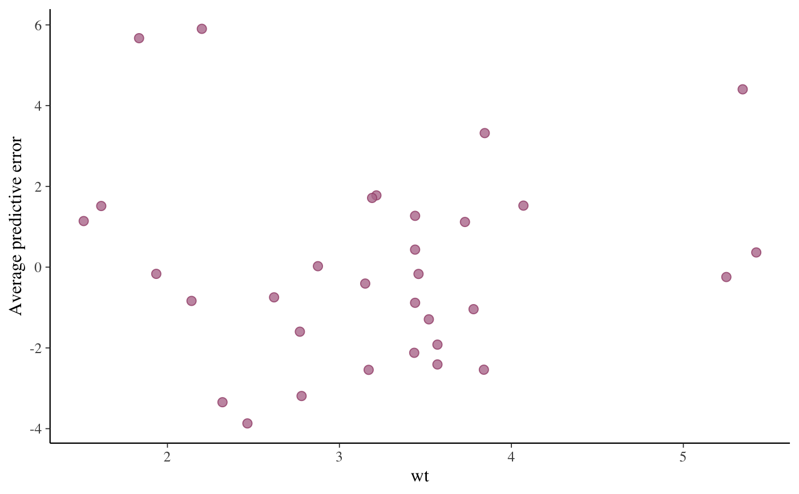# Example of a PPC for ordinal models (stan_polr) fit2 <- stan_polr(tobgp ~ agegp, data = esoph, method = "probit", prior = R2(0.2, "mean"), init_r = 0.1)#> #> SAMPLING FOR MODEL 'polr' NOW (CHAIN 1). #> #> Gradient evaluation took 9.9e-05 seconds #> 1000 transitions using 10 leapfrog steps per transition would take 0.99 seconds. #> Adjust your expectations accordingly! #> #> #> Iteration: 1 / 2000 [ 0%] (Warmup) #> Iteration: 200 / 2000 [ 10%] (Warmup) #> Iteration: 400 / 2000 [ 20%] (Warmup) #> Iteration: 600 / 2000 [ 30%] (Warmup) #> Iteration: 800 / 2000 [ 40%] (Warmup) #> Iteration: 1000 / 2000 [ 50%] (Warmup) #> Iteration: 1001 / 2000 [ 50%] (Sampling) #> Iteration: 1200 / 2000 [ 60%] (Sampling) #> Iteration: 1400 / 2000 [ 70%] (Sampling) #> Iteration: 1600 / 2000 [ 80%] (Sampling) #> Iteration: 1800 / 2000 [ 90%] (Sampling) #> Iteration: 2000 / 2000 [100%] (Sampling) #> #> Elapsed Time: 0.762679 seconds (Warm-up) #> 0.614166 seconds (Sampling) #> 1.37684 seconds (Total) #> #> #> SAMPLING FOR MODEL 'polr' NOW (CHAIN 2). #> #> Gradient evaluation took 3.4e-05 seconds #> 1000 transitions using 10 leapfrog steps per transition would take 0.34 seconds. #> Adjust your expectations accordingly! #> #> #> Iteration: 1 / 2000 [ 0%] (Warmup) #> Iteration: 200 / 2000 [ 10%] (Warmup) #> Iteration: 400 / 2000 [ 20%] (Warmup) #> Iteration: 600 / 2000 [ 30%] (Warmup) #> Iteration: 800 / 2000 [ 40%] (Warmup) #> Iteration: 1000 / 2000 [ 50%] (Warmup) #> Iteration: 1001 / 2000 [ 50%] (Sampling) #> Iteration: 1200 / 2000 [ 60%] (Sampling) #> Iteration: 1400 / 2000 [ 70%] (Sampling) #> Iteration: 1600 / 2000 [ 80%] (Sampling) #> Iteration: 1800 / 2000 [ 90%] (Sampling) #> Iteration: 2000 / 2000 [100%] (Sampling) #> #> Elapsed Time: 0.591365 seconds (Warm-up) #> 0.635885 seconds (Sampling) #> 1.22725 seconds (Total) #> #> #> SAMPLING FOR MODEL 'polr' NOW (CHAIN 3). #> #> Gradient evaluation took 3e-05 seconds #> 1000 transitions using 10 leapfrog steps per transition would take 0.3 seconds. #> Adjust your expectations accordingly! #> #> #> Iteration: 1 / 2000 [ 0%] (Warmup) #> Iteration: 200 / 2000 [ 10%] (Warmup) #> Iteration: 400 / 2000 [ 20%] (Warmup) #> Iteration: 600 / 2000 [ 30%] (Warmup) #> Iteration: 800 / 2000 [ 40%] (Warmup) #> Iteration: 1000 / 2000 [ 50%] (Warmup) #> Iteration: 1001 / 2000 [ 50%] (Sampling) #> Iteration: 1200 / 2000 [ 60%] (Sampling) #> Iteration: 1400 / 2000 [ 70%] (Sampling) #> Iteration: 1600 / 2000 [ 80%] (Sampling) #> Iteration: 1800 / 2000 [ 90%] (Sampling) #> Iteration: 2000 / 2000 [100%] (Sampling) #> #> Elapsed Time: 0.594821 seconds (Warm-up) #> 0.707751 seconds (Sampling) #> 1.30257 seconds (Total) #> #> #> SAMPLING FOR MODEL 'polr' NOW (CHAIN 4). #> #> Gradient evaluation took 6.3e-05 seconds #> 1000 transitions using 10 leapfrog steps per transition would take 0.63 seconds. #> Adjust your expectations accordingly! #> #> #> Iteration: 1 / 2000 [ 0%] (Warmup) #> Iteration: 200 / 2000 [ 10%] (Warmup) #> Iteration: 400 / 2000 [ 20%] (Warmup) #> Iteration: 600 / 2000 [ 30%] (Warmup) #> Iteration: 800 / 2000 [ 40%] (Warmup) #> Iteration: 1000 / 2000 [ 50%] (Warmup) #> Iteration: 1001 / 2000 [ 50%] (Sampling) #> Iteration: 1200 / 2000 [ 60%] (Sampling) #> Iteration: 1400 / 2000 [ 70%] (Sampling) #> Iteration: 1600 / 2000 [ 80%] (Sampling) #> Iteration: 1800 / 2000 [ 90%] (Sampling) #> Iteration: 2000 / 2000 [100%] (Sampling) #> #> Elapsed Time: 0.696045 seconds (Warm-up) #> 0.774957 seconds (Sampling) #> 1.471 seconds (Total) #>pp_check(fit2, plotfun = "bars", nreps = 500, prob = 0.5)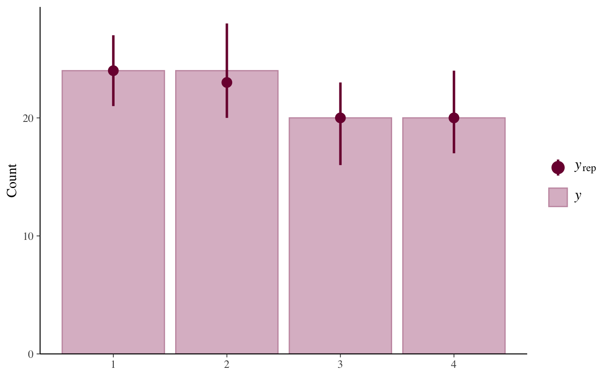pp_check(fit2, plotfun = "bars_grouped", group = esoph$agegp, nreps = 500, prob = 0.5)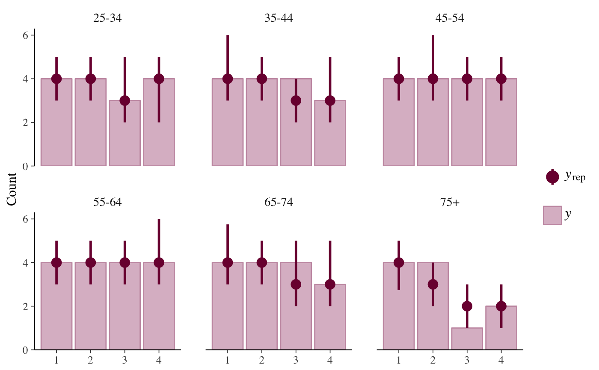